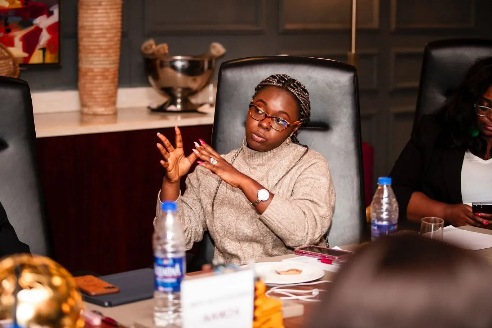
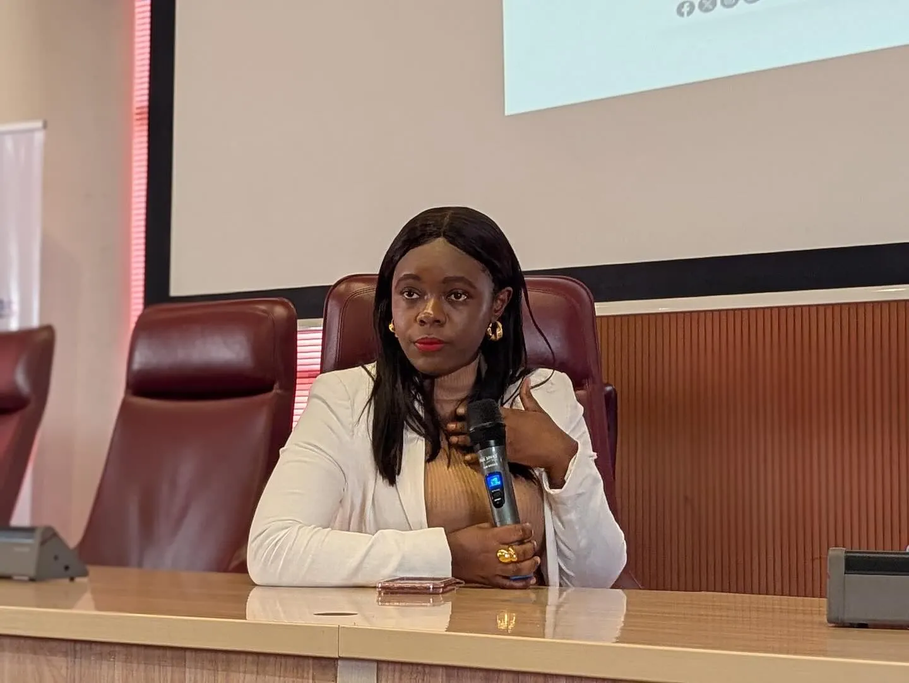

Nafisa Atiku: The Changemaker Elevating Young African Women
Think of a single spark that fans into a wildfire. That is Nafisa Atiku a figure whose achievements do more than shine, they ignite. She stands as a living contradiction to doubt, a testament to dreams made real. Her sphere of influence is not just broad it’s deep, echoing in the lives of thousands of young African women.
A Global Voice for Politics and Power
When Nafisa released Girls Just Want to Run, she didn’t simply write a manifesto she ignited a movement. That book is a rallying cry for young Nigerian women to claim their political destiny. It is more than ink on paper: it is permission, encouragement, and strategy rolled into one. She didn’t whisper “you can run” she shouted it, equipping readers with clear steps and unwavering belief.
As a Global Shaper of the World Economic Forum and a Mandela Washington Fellow, she sits at elite tables. These platforms aren’t just honors. They are stages from which she beams the message that Africa’s future is female and fearless
Her voice carried weight in international policy forums in Prague and at the West African Youth Summit in 2024, where she championed sustainable development, innovative finance, and youth trade initiatives. There, she didn’t just speak she shaped agendas .
NAF Foundation: Building Leaders Not Followers
Nafisa’s impact is institutional and individual. With the NAF Foundation, she set out not to create followers but trailblazers. She has mentored, coached, and capacitated young women to take charge in politics, entrepreneurship, technology, gender justice, climate action and she has done so across Lagos, Ibadan, and Abuja since 2016
This foundation does not whisper platitudes. It delivers results.
- Hundreds of participants in mentorship programs now serve as advocates, entrepreneurs, and community leaders.
- Intergenerational dialogues connect rising stars with established women leaders.
- Policy workshops and strategic partnerships with organizations like UN Women, International Finance Corporation, ONE Campaign, African Union, and the Ministry of Trade take these young women from classroom to boardroom
These are not abstract wins. They are appointments, votes, small businesses launched, and policies influenced. Nafisa’s foundation offers more than hope it delivers a pathway to power.

Beating Barriers Through Legacy and Recognition
Her awards are not just decorations. They validate. In 2022 she received the Royal African Award from the Ooni of Ife and her profile continues to include titles like Nalafem Fellow and Cool Czechia Exchange Fellow
These honors also open doors. They bring more funding, more partnerships, and more reach. Nafisa’s name becomes a beacon for every organization that wants to invest in African women's leadership.
Turning Platforms into Pipelines
Nafisa is often sought after by global media and civic platforms. As a TEDx speaker, her message on Girls Can Run still resonates one listen leaves you believing that women are not just capable, but destined to lead
Her public presence includes thoughtful editorials and interviews in BBC Media Action, Blueprint, Punch, Bella Naija, and YMonitor, but she also walks the talk. She has taken leadership roles with Dataphyte Foundation, advising on data‑driven governance initiatives, and is an envoy for Nalafem’s Feminist Coalition at the African Union
Measurable Influence and Real World Outcomes
Stories often breathe life into achievement, and Nafisa’s is no exception. One protégé, Karimot Odebode, became a UN SDG Champion in 2022 thanks to mentorship through Nafisa’s initiatives. That single transformation echoes across communities.
Her environmental leadership during the Walter Carrington Fellowship involved teaching recycling-for-income schemes in Ikorodu, Ikorodu's residents saw plastic become profit and waste become wealth
When Nafisa sits at high‑level policy roundtables, she carries more than a résumé she carries the stories of young women transformed. She merges their voices with her own to influence trade policy, climate response, and gender justice.
Why Nafisa Atiku Matters Today and Tomorrow
Don’t think of Nafisa as a one‑time hero. She is a force multiplier. Each woman she empowers goes on to lift dozens more. Each policy she shapes affects millions.
Here’s why she belongs on that pedestal:
- She flips the script on who politics is for. With clarity she pushes from you can’t to you must.
- She builds infrastructure for success. She bridges connections to UN, AU, IFC, media, academia.
- She models intersectionality gender, youth, environment, governance all interwoven in one powerful tapestry.
- She shows sustainability and scale. This is leadership grounded in community, elevated to global relevance.
For the Aspiring Changemaker
If you’ve ever thought your voice was small think again. Nafisa’s journey tells us that one person with grit, clarity, and compassion can bend the arc of history.
Ask yourself:
- What story do you want to unfold?
- Who will you empower?
- Which door will you open?
Final Thoughts
Nafisa Atiku stands tall not by accident but by design. She is the spark at the center of a firestorm of progress. She stands because she chose to run. She soars because she built the runway.
She doesn’t just deserve praise. She demands action. Her achievements are not applause‑worthy they are invitation-worthy. They invite each one of us to stand, to advocate, to build, and above all to run.
The next time you ask “Where do I begin?” remember her legacy: You begin with one step, one voice, one act of commitment. Because that is how revolutions like hers start.